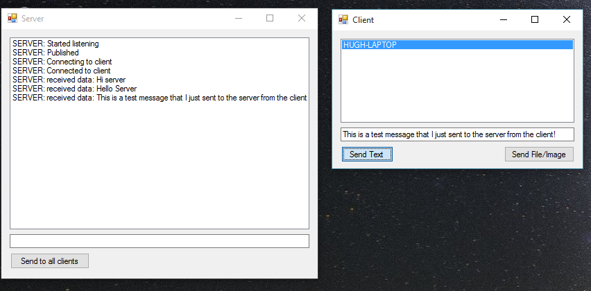
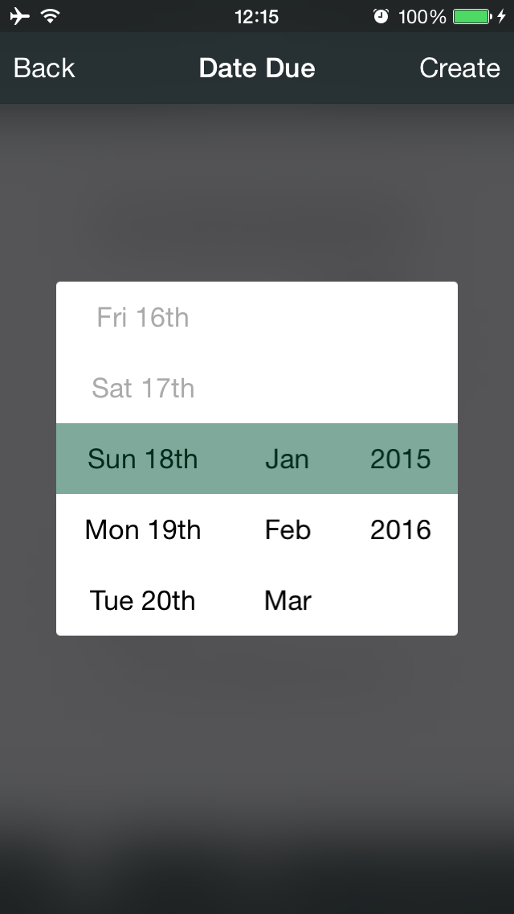
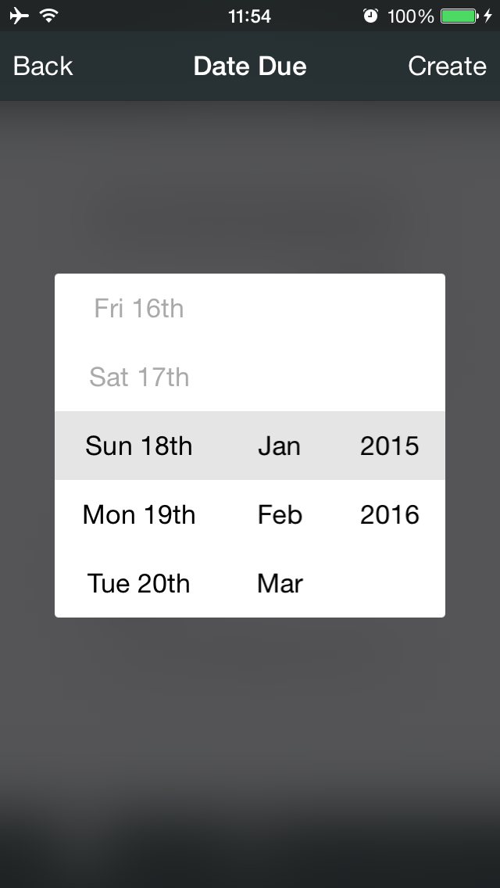
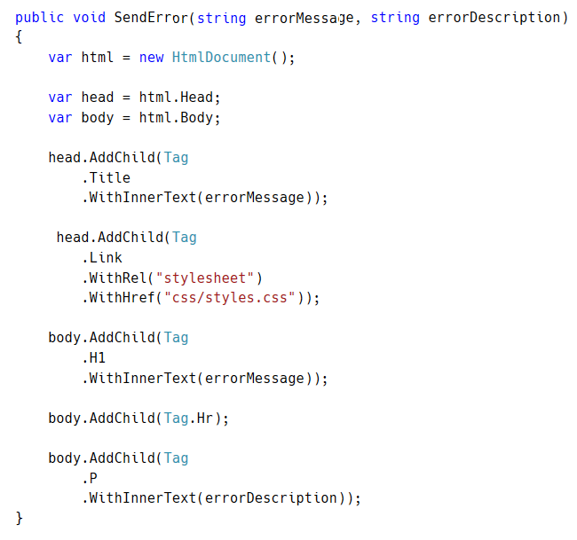
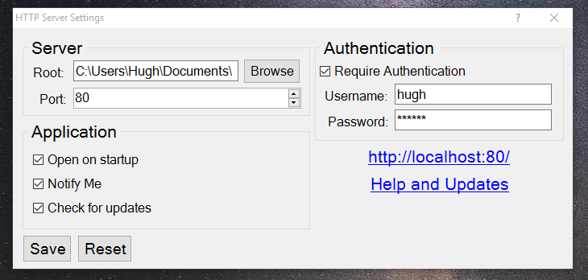
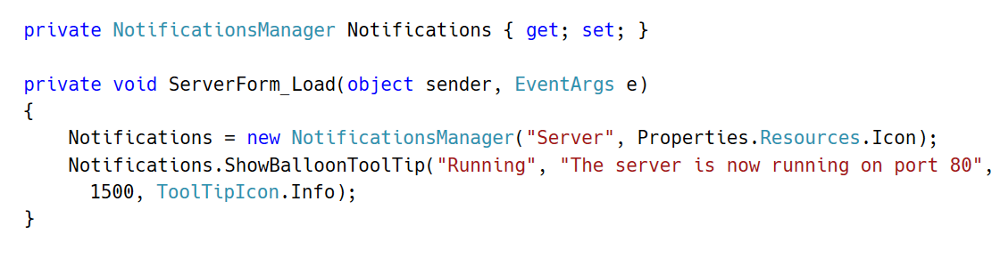
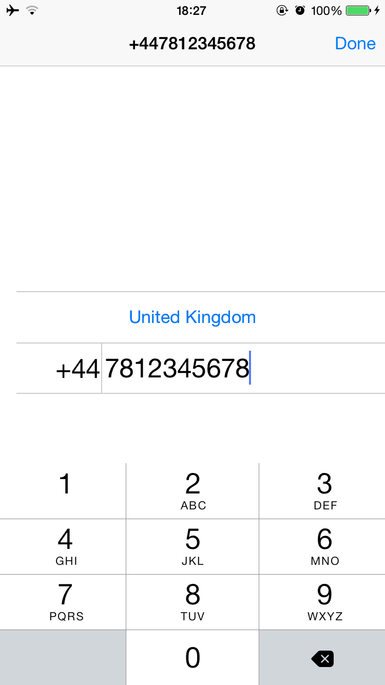
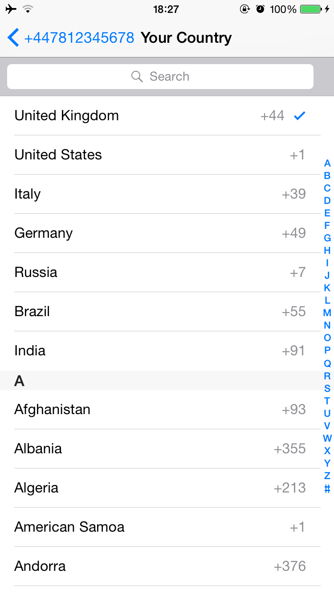
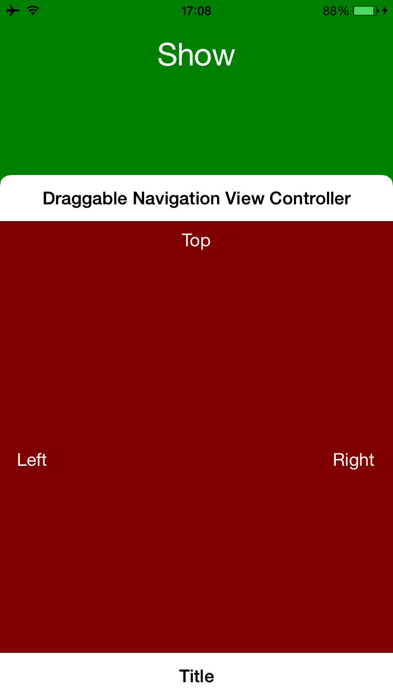
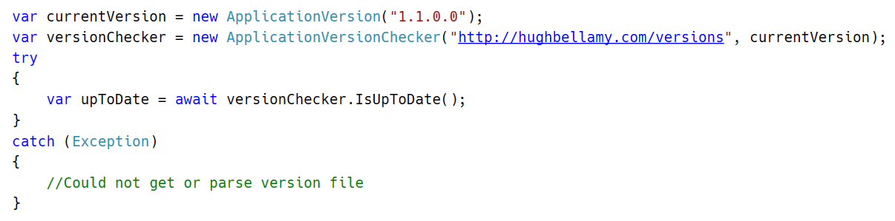

Hi!
Hi, I'm Hugh, an 18 year old aspiring developer.
Check out my site for various apps and projects, open source libraries and my blog.
Open Source
I enjoy being involved with the open source community. I have contributed to several repositories and have released a number of libraries and proejcts to the community. Find me on Github here.
-
Communicate
An open source cross-platform library that aims to make it easy to connect Windows, Mac OSX and iOS devices to each other and send data between devices simply, reliably and effectively.
Features
- Supports iOS, Mac OSX and iOS with identical APIs
- Send any type of data between devices
- Add a header or footer to data and get updates on progress etc. on receiving and sending data
- Register new data types and change the way that Communicate operates by extending the library
- The library is designed to be used in a modular way - you can choose what functions Communicate runs
- View the demo and example application as well as code documentation
- This project is open source. You can view, change and contribute to the source code on GitHub
Technologies
- Language: C# and Swift
- Frameworks: Foundation, CoreFoundation and .NET Framework
- Technologies: Sockets, TCP, Bonjour, Networking and Streams
-
Day Date Picker
An open source drop in highly customizable date picker which displays the day of the week alongside the day number column written in Objective C for iOS.
 Features
- Add a simple picker with delegate methods enabling you to get feedback on user entry and control the display of the picker
- Change how the picker is presented and displayed to the user
- This project is open source. You can view, change and contribute to the source code on GitHub
Technologies
- Language: Swift
-
Html Generator
An open source library that simplifies generating complex HTML files from C# code. In fact, this site was generated using this library.
Features
- Use method chaining to create complex HTML trees and change elements
- Use all HTML tags and attributes and create your own
- Add any attribute and content to all HTML elements, including classes, ids and styles
- This project is open source. You can view, change and contribute to the source code on GitHub
Technologies
- Language: C#
-
HTTP Server
An open source versatile local and remote HTTP web server written in C#.
Features
- Change the root directory and server port all from an easy to use GUI
- Great for abstracting URLs and as a versatile local server
- Run or install the application and the server starts up instantly, even on startup if you want
- This project is open source. You can view, change and contribute to the source code on GitHub
Technologies
- Language: C#
Installation Instructions
- Download the software release for your computer and install/run the executable
- Make sure to allow the software access to your firewall if you are prompted
- Launch the software on your PC and then open HTTP Server on your computer
- Go to your web browser and type http://localhost/ to start browsing
- You can access the server's settings by clicking on the HTTP Server icon in your taskbar
-
Notifications
A drop-in compilation of code files across platforms and programming languages that simplify posting notifications of various styles to the end user.
Features
- Add only two lines of code to get a fully functional notifications manager into your app
- Change the tooltip text and icon of your tasbar icon as well as the text, content, duration and icon of notifications
- Add buttons with click callback actions to the context menu of your taskbar icon (Windows only)
- This project is open source. You can view, change and contribute to the source code on GitHub
Technologies
- Language: C# and Objective C
-
Phone Number Picker
An open source drop in phone number and country picker written in Swift for iOS. It is based off the WhatsApp account creation screen in terms of styling and functionality.
 Features
- Add a simple picker controller with delegate methods enabling you to get feedback on user entry
- View the demo and example application as well as code documentation
- This project is open source. You can view, change and contribute to the source code on GitHub
Technologies
- Language: Swift
-
Semi Modal Controller
An open source library, written in Objective C for iOS, that allows you to present a UIViewController semi-modally (over the current content). Designed in a modular way and with subclassing in mind, this library lets you present view controllers that you can slide, zoom, dismiss and subclass.
Features
- Add a a pretty and highly customizable library that provides a way of presenting view controllers semi-modally
- View the demo and example application as well as code documentation
- This project is open source. You can view, change and contribute to the source code on GitHub
Technologies
- Language: Swift
-
Version Checker
An open source drop-in library, written in C#, that simplifies version checking for applications of all types.
Features
- Add one .cs file to your project, type two lines of code to get a fully functional version checker
- Add a date, (release) notes, a url and more to releases and updates
- This project is open source. You can view, change and contribute to the source code on GitHub
Technologies
- Language: C#